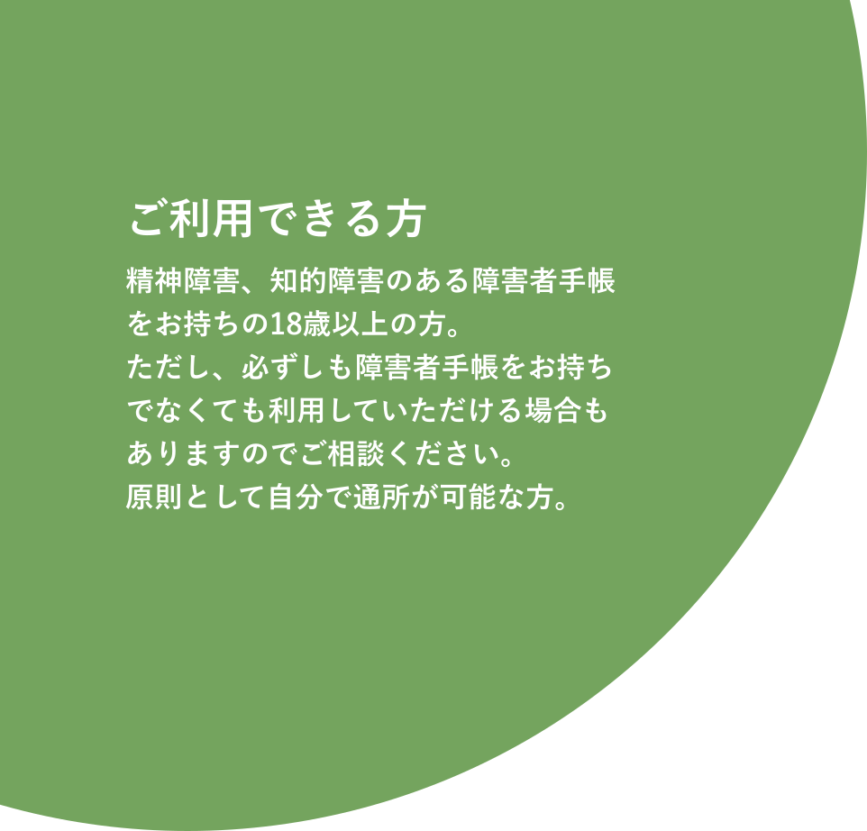
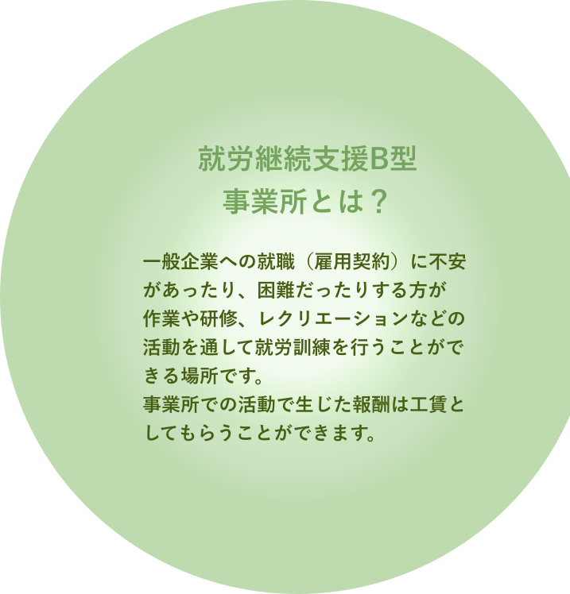

ご利用までの流れ
- お問い合わせ
- 事業所見学
- 体験（２回〜５回）
- 行政手続き（受給者証の申請）
- ご契約
- 利用開始
まずはお気軽にお問い合わせください。
実際に通っていただきます。 スタッフとの振り返りも行います
市区町村の障害福祉課で 「障害者サービス受給者証」の 発行申請をします
お住まいの市区町村から 受給者証の発行を受けたのち、 作業所TOTTOと契約を結び、 正式に利用開始となります。
個別支援計画を作成した上で、 利用開始します。